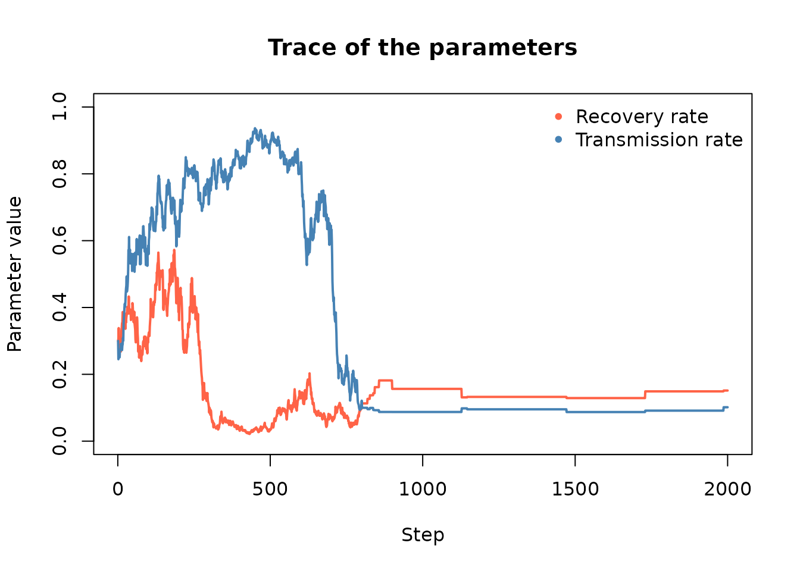

Likelihood Free Markhov Chain Monte Carlo (LFMCMC)
Andrew Pulsipher
2025-05-12
Source:vignettes/likelihood-free-mcmc.Rmd
likelihood-free-mcmc.RmdIntroduction
The purpose of the “LFMCMC” class in epiworldR is to perform a Likelihood-Free Markhov Chain Monte Carlo (LFMCMC) simulation. LFMCMC is used to approximate models where the likelihood function is either unavailable or computationally expensive. This example assumes a general understanding of LFMCMC. To learn more about it, see the Handbook of Markhov Chain Monte Carlo by Brooks et al. https://doi.org/10.1201/b10905.
In this example, we use LFMCMC to recover the parameters of an SIR model.
Setup The SIR Model
Our SIR model will have the following characteristics:
- Virus Name: COVID-19
- Initial Virus Prevalence: 0.01
- Recovery Rate: 1/7 (0.14)
- Transmission Rate: 0.1
- Number of Agents: 2,000
We use the ModelSIR and agents_smallworld
functions to construct the model in epiworldR.
library(epiworldR)
model_seed <- 122
model_sir <- ModelSIR(
name = "COVID-19",
prevalence = .01,
transmission_rate = .1,
recovery_rate = 1 / 7
)
agents_smallworld(
model_sir,
n = 2000,
k = 5,
d = FALSE,
p = 0.01
)Then we run the model for 50 days and print the results.
verbose_off(model_sir)
run(
model_sir,
ndays = 50,
seed = model_seed
)
summary(model_sir)
#> ________________________________________________________________________________
#> ________________________________________________________________________________
#> SIMULATION STUDY
#>
#> Name of the model : Susceptible-Infected-Recovered (SIR)
#> Population size : 2000
#> Agents' data : (none)
#> Number of entities : 0
#> Days (duration) : 50 (of 50)
#> Number of viruses : 1
#> Last run elapsed t : 350.00µs
#> Last run speed : 285.71 million agents x day / second
#> Rewiring : off
#>
#> Global events:
#> (none)
#>
#> Virus(es):
#> - COVID-19
#>
#> Tool(s):
#> (none)
#>
#> Model parameters:
#> - Recovery rate : 0.1429
#> - Transmission rate : 0.1000
#>
#> Distribution of the population at time 50:
#> - (0) Susceptible : 1980 -> 1865
#> - (1) Infected : 20 -> 0
#> - (2) Recovered : 0 -> 135
#>
#> Transition Probabilities:
#> - Susceptible 1.00 0.00 -
#> - Infected - 0.85 0.15
#> - Recovered - - 1.00Note the “Model parameters” and the “Distribution of the population
at time 50” from the above output. Our goal is to recover the model
parameters (Recovery and Transmission rates) through LFMCMC. We
accomplish this by comparing the population distribution from each
simulation run to the “observed” distribution from our model. We get
this distribution using the get_today_total function in
epiworldR.
model_sir_data <- get_today_total(model_sir)For practical cases, you would use observed data, instead of a model
simulation. We use a simulation in our example to show the accuracy of
LFMCMC in recovering the model parameters. Whenever we use the term
“observed data” below, we are referring to the model distribution
(model_sir_data).
Setup LFMCMC
In epiworldR, LFMCMC requires four functions:
The simulation function runs a model with a given set of parameters and produces output that matches the structure of our observed data. For our example, we set the Recovery and Transmission rate parameters, run an SIR model for 50 days, and return the distribution of the population at the end of the run.
simulation_fun <- function(params, lfmcmc_obj) {
set_param(model_sir, "Recovery rate", params[1])
set_param(model_sir, "Transmission rate", params[2])
run(
model_sir,
ndays = 50
)
get_today_total(model_sir)
}The summary function extracts summary statistics
from the given data. This should produce the same output format for both
the observed data and the simulated data from
simulation_fun. For our example, since the population
distribution is already a summary of the data, our summary function
simply passes that data through. With more complicated use cases, you
might instead compute summary statistics such as the mean or standard
deviation.
summary_fun <- function(data, lfmcmc_obj) {
return(data)
}The proposal function returns a new set of
parameters, which it is “proposing” parameters for the LFMCMC algorithm
to try in the simulation function. In our example, it takes the
parameters from the previous run (old_params) and does a
random step away from those values.
proposal_fun <- function(old_params, lfmcmc_obj) {
res <- plogis(qlogis(old_params) + rnorm(length(old_params), sd = .1))
return(res)
}The kernel function effectively scores the results
of the latest simulation run against the observed data, by comparing the
summary statistics from summary_fun for each. LFMCMC uses
the kernel score and the Hastings Ratio to determine whether or not to
accept the parameters for that run. In our example, since
summary_fun simply passes the data through,
simulated_stats and observed_stats are our
simulated and observed data respectively.
kernel_fun <- function(
simulated_stats, observed_stats, epsilon, lfmcmc_obj
) {
diff <- ((simulated_stats - observed_stats)^2)^epsilon
dnorm(sqrt(sum(diff)))
}With all four functions defined, we can initialize the simulation
object using the LFMCMC function in epiworldR along with
the appropriate setter functions.
lfmcmc_model <- LFMCMC(model_sir) |>
set_simulation_fun(simulation_fun) |>
set_summary_fun(summary_fun) |>
set_proposal_fun(proposal_fun) |>
set_kernel_fun(kernel_fun) |>
set_observed_data(model_sir_data)Run LFMCMC Simulation
To run LFMCMC, we need to set the initial model parameters. For our
example, we use an initial Recovery rate of 0.3 and an initial
Transmission rate of 0.3. We set the kernel epsilon to 1.0 and run the
simulation for 2,000 samples (iterations) using the
run_lfmcmc function.
initial_params <- c(0.3, 0.3)
epsilon <- 1.0
n_samples <- 2000
# Run the LFMCMC simulation
run_lfmcmc(
lfmcmc = lfmcmc_model,
params_init = initial_params,
n_samples = n_samples,
epsilon = epsilon,
seed = model_seed
)
#> _________________________________________________________________________
#> |||||||||||||||||||||||||||||||||||||||||||||||||||||||||||||||||||||||||Results
To make the printed results easier to read, we use the
set_params_names and set_stats_names functions
before calling print. We also use a burn-in period of 1,500
samples.
set_params_names(lfmcmc_model, c("Recovery rate", "Transmission rate"))
set_stats_names(lfmcmc_model, get_states(model_sir))
print(lfmcmc_model, burnin = 1500)
#> ___________________________________________
#>
#> LIKELIHOOD-FREE MARKOV CHAIN MONTE CARLO
#>
#> N Samples (total) : 2000
#> N Samples (after burn-in period) : 500
#> Elapsed t : 1.00s
#>
#> Parameters:
#> -Recovery rate : 0.14 [ 0.13, 0.15] (initial : 0.30)
#> -Transmission rate : 0.09 [ 0.09, 0.10] (initial : 0.30)
#>
#> Statistics:
#> -Susceptible : 1865.49 [ 1864.00, 1866.00] (Observed: 1865.00)
#> -Infected : 0.00 [ 0.00, 0.00] (Observed: 0.00)
#> -Recovered : 134.51 [ 134.00, 136.00] (Observed: 135.00)
#> ___________________________________________We can also look at the trace of the parameters:
# Extracting the accepted parameters
accepted <- get_all_accepted_params(lfmcmc_model)
# Plotting the trace
plot(
accepted[, 1], type = "l", ylim = c(0, 1),
main = "Trace of the parameters",
lwd = 2,
col = "tomato",
xlab = "Step",
ylab = "Parameter value"
)
lines(accepted[, 2], type = "l", lwd = 2, col = "steelblue")
legend(
"topright",
bty = "n",
legend = c("Recovery rate", "Transmission rate"),
pch = 20,
col = c("tomato", "steelblue")
)
Recall that the observed data came from a model with a Recovery rate of 0.3 and a Transmission rate of 0.3. As the above output shows, LFMCMC made a close approximation of the parameters, which resulted in a close approximation of the observed population distribution. This example highlights the effectiveness of using LFMCMC for highly complex models.